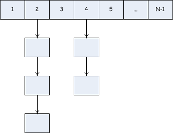

初探 Redis
大学的时候我们都学过一种数据结构——哈希表，查询效率非常高，复杂度为O(1)， 通常关注查询性能的地方都会用到这个东西。

缓存系统，就是一个哈希表。只是通常哈希表的场景都是在本机，把哈希表放到远程的机器上，本机通过网络访问（增删查改）哈希表，就成了现在的缓存系统了。
我们还可以尝试强化这个哈希表，比如支持存储各种类型的数据；存储有价值数据的哈希表时，需要定时备份这个哈希表；访问的频率太大了，需要将数据分散到多个远程的哈希表中；远程的哈希表节点多了，又该如何管理他们等等。
所以缓存系统只是哈希表的一种延伸，它只是一种数据结构的应用。同样，redis 也是。
这一章带大家大概浏览一下 redis。